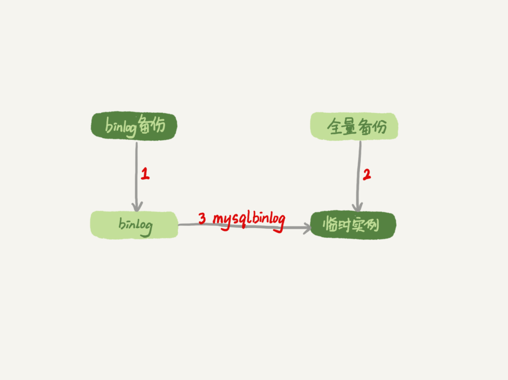
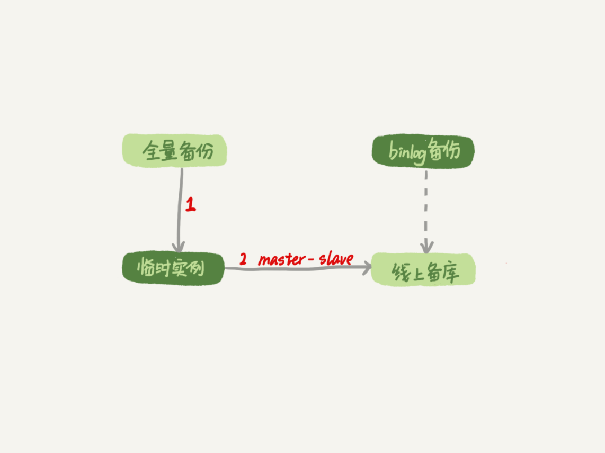
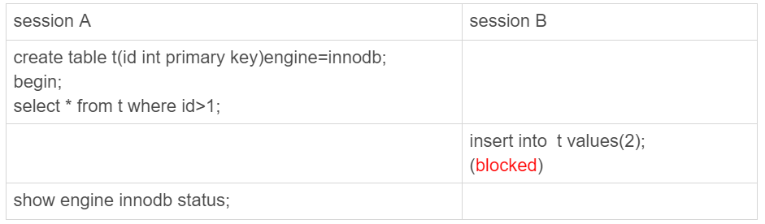
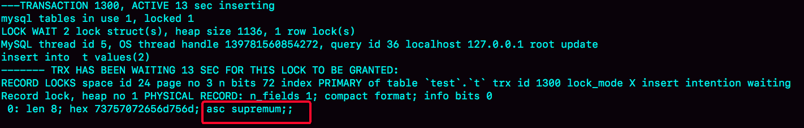

- 00 开篇词 这一次，让我们一起来搞懂MySQL.md.html
- 01 基础架构：一条SQL查询语句是如何执行的？.md.html
- 02 日志系统：一条SQL更新语句是如何执行的？.md.html
- 03 事务隔离：为什么你改了我还看不见？.md.html
- 04 深入浅出索引（上）.md.html
- 05 深入浅出索引（下）.md.html
- 06 全局锁和表锁 ：给表加个字段怎么有这么多阻碍？.md.html
- 07 行锁功过：怎么减少行锁对性能的影响？.md.html
- 08 事务到底是隔离的还是不隔离的？.md.html
- 09 普通索引和唯一索引，应该怎么选择？.md.html
- 10 MySQL为什么有时候会选错索引？.md.html
- 11 怎么给字符串字段加索引？.md.html
- 12 为什么我的MySQL会“抖”一下？.md.html
- 13 为什么表数据删掉一半，表文件大小不变？.md.html
- 14 count()这么慢，我该怎么办？.md.html
- 15 答疑文章（一）：日志和索引相关问题.md.html
- 16 “order by”是怎么工作的？.md.html
- 17 如何正确地显示随机消息？.md.html
- 18 为什么这些SQL语句逻辑相同，性能却差异巨大？.md.html
- 19 为什么我只查一行的语句，也执行这么慢？.md.html
- 20 幻读是什么，幻读有什么问题？.md.html
- 21 为什么我只改一行的语句，锁这么多？.md.html
- 22 MySQL有哪些“饮鸩止渴”提高性能的方法？.md.html
- 23 MySQL是怎么保证数据不丢的？.md.html
- 24 MySQL是怎么保证主备一致的？.md.html
- 25 MySQL是怎么保证高可用的？.md.html
- 26 备库为什么会延迟好几个小时？.md.html
- 27 主库出问题了，从库怎么办？.md.html
- 28 读写分离有哪些坑？.md.html
- 29 如何判断一个数据库是不是出问题了？.md.html
- 30 答疑文章（二）：用动态的观点看加锁.md.html
- 31 误删数据后除了跑路，还能怎么办？.md.html
- 32 为什么还有kill不掉的语句？.md.html
- 33 我查这么多数据，会不会把数据库内存打爆？.md.html
- 34 到底可不可以使用join？.md.html
- 35 join语句怎么优化？.md.html
- 36 为什么临时表可以重名？.md.html
- 37 什么时候会使用内部临时表？.md.html
- 38 都说InnoDB好，那还要不要使用Memory引擎？.md.html
- 39 自增主键为什么不是连续的？.md.html
- 40 insert语句的锁为什么这么多？.md.html
- 41 怎么最快地复制一张表？.md.html
- 42 grant之后要跟着flush privileges吗？.md.html
- 43 要不要使用分区表？.md.html
- 44 答疑文章（三）：说一说这些好问题.md.html
- 45 自增id用完怎么办？.md.html
- 我的MySQL心路历程.md.html
- 结束语 点线网面，一起构建MySQL知识网络.md.html
31 误删数据后除了跑路，还能怎么办？
今天我要和你讨论的是一个沉重的话题：误删数据。
在前面几篇文章中，我们介绍了 MySQL 的高可用架构。当然，传统的高可用架构是不能预防误删数据的，因为主库的一个 drop table 命令，会通过 binlog 传给所有从库和级联从库，进而导致整个集群的实例都会执行这个命令。
虽然我们之前遇到的大多数的数据被删，都是运维同学或者 DBA 背锅的。但实际上，只要有数据操作权限的同学，都有可能踩到误删数据这条线。
今天我们就来聊聊误删数据前后，我们可以做些什么，减少误删数据的风险，和由误删数据带来的损失。
为了找到解决误删数据的更高效的方法，我们需要先对和 MySQL 相关的误删数据，做下分类：
- 使用 delete 语句误删数据行；
- 使用 drop table 或者 truncate table 语句误删数据表；
- 使用 drop database 语句误删数据库；
- 使用 rm 命令误删整个 MySQL 实例。
误删行
在[第 24 篇文章]中，我们提到如果是使用 delete 语句误删了数据行，可以用 Flashback 工具通过闪回把数据恢复回来。
Flashback 恢复数据的原理，是修改 binlog 的内容，拿回原库重放。而能够使用这个方案的前提是，需要确保 binlog_format=row 和 binlog_row_image=FULL。
具体恢复数据时，对单个事务做如下处理：
- 对于 insert 语句，对应的 binlog event 类型是 Write_rows event，把它改成 Delete_rows event 即可；
- 同理，对于 delete 语句，也是将 Delete_rows event 改为 Write_rows event；
- 而如果是 Update_rows 的话，binlog 里面记录了数据行修改前和修改后的值，对调这两行的位置即可。
如果误操作不是一个，而是多个，会怎么样呢？比如下面三个事务：
(A)delete ...
(B)insert ...
(C)update ...
现在要把数据库恢复回这三个事务操作之前的状态，用 Flashback 工具解析 binlog 后，写回主库的命令是：
(reverse C)update ...
(reverse B)delete ...
(reverse A)insert ...
也就是说，如果误删数据涉及到了多个事务的话，需要将事务的顺序调过来再执行。
需要说明的是，我不建议你直接在主库上执行这些操作。
恢复数据比较安全的做法，是恢复出一个备份，或者找一个从库作为临时库，在这个临时库上执行这些操作，然后再将确认过的临时库的数据，恢复回主库。
为什么要这么做呢？
这是因为，一个在执行线上逻辑的主库，数据状态的变更往往是有关联的。可能由于发现数据问题的时间晚了一点儿，就导致已经在之前误操作的基础上，业务代码逻辑又继续修改了其他数据。所以，如果这时候单独恢复这几行数据，而又未经确认的话，就可能会出现对数据的二次破坏。
当然，我们不止要说误删数据的事后处理办法，更重要是要做到事前预防。我有以下两个建议：
- 把 sql_safe_updates 参数设置为 on。这样一来，如果我们忘记在 delete 或者 update 语句中写 where 条件，或者 where 条件里面没有包含索引字段的话，这条语句的执行就会报错。
- 代码上线前，必须经过 SQL 审计。
你可能会说，设置了 sql_safe_updates=on，如果我真的要把一个小表的数据全部删掉，应该怎么办呢？
如果你确定这个删除操作没问题的话，可以在 delete 语句中加上 where 条件，比如 where id>=0。
但是，delete 全表是很慢的，需要生成回滚日志、写 redo、写 binlog。所以，从性能角度考虑，你应该优先考虑使用 truncate table 或者 drop table 命令。
使用 delete 命令删除的数据，你还可以用 Flashback 来恢复。而使用 truncate /drop table 和 drop database 命令删除的数据，就没办法通过 Flashback 来恢复了。为什么呢？
这是因为，即使我们配置了 binlog_format=row，执行这三个命令时，记录的 binlog 还是 statement 格式。binlog 里面就只有一个 truncate/drop 语句，这些信息是恢复不出数据的。
那么，如果我们真的是使用这几条命令误删数据了，又该怎么办呢？
误删库 / 表
这种情况下，要想恢复数据，就需要使用全量备份，加增量日志的方式了。这个方案要求线上有定期的全量备份，并且实时备份 binlog。
在这两个条件都具备的情况下，假如有人中午 12 点误删了一个库，恢复数据的流程如下：
- 取最近一次全量备份，假设这个库是一天一备，上次备份是当天 0 点；
- 用备份恢复出一个临时库；
- 从日志备份里面，取出凌晨 0 点之后的日志；
- 把这些日志，除了误删除数据的语句外，全部应用到临时库。
这个流程的示意图如下所示：

图 1 数据恢复流程 -mysqlbinlog 方法
关于这个过程，我需要和你说明如下几点：
- 为了加速数据恢复，如果这个临时库上有多个数据库，你可以在使用 mysqlbinlog 命令时，加上一个–database 参数，用来指定误删表所在的库。这样，就避免了在恢复数据时还要应用其他库日志的情况。
- 在应用日志的时候，需要跳过 12 点误操作的那个语句的 binlog：
- 如果原实例没有使用 GTID 模式，只能在应用到包含 12 点的 binlog 文件的时候，先用–stop-position 参数执行到误操作之前的日志，然后再用–start-position 从误操作之后的日志继续执行；
- 如果实例使用了 GTID 模式，就方便多了。假设误操作命令的 GTID 是 gtid1，那么只需要执行 set gtid_next=gtid1;begin;commit; 先把这个 GTID 加到临时实例的 GTID 集合，之后按顺序执行 binlog 的时候，就会自动跳过误操作的语句。
不过，即使这样，使用 mysqlbinlog 方法恢复数据还是不够快，主要原因有两个：
- 如果是误删表，最好就是只恢复出这张表，也就是只重放这张表的操作，但是 mysqlbinlog 工具并不能指定只解析一个表的日志；
- 用 mysqlbinlog 解析出日志应用，应用日志的过程就只能是单线程。我们在[第 26 篇文章]中介绍的那些并行复制的方法，在这里都用不上。
**一种加速的方法是，**在用备份恢复出临时实例之后，将这个临时实例设置成线上备库的从库，这样：
- 在 start slave 之前，先通过执行 change replication filter replicate_do_table = (tbl_name) 命令，就可以让临时库只同步误操作的表；
- 这样做也可以用上并行复制技术，来加速整个数据恢复过程。
这个过程的示意图如下所示。

图 2 数据恢复流程 -master-slave 方法
可以看到，图中 binlog 备份系统到线上备库有一条虚线，是指如果由于时间太久，备库上已经删除了临时实例需要的 binlog 的话，我们可以从 binlog 备份系统中找到需要的 binlog，再放回备库中。
假设，我们发现当前临时实例需要的 binlog 是从 master.000005 开始的，但是在备库上执行 show binlogs 显示的最小的 binlog 文件是 master.000007，意味着少了两个 binlog 文件。这时，我们就需要去 binlog 备份系统中找到这两个文件。
把之前删掉的 binlog 放回备库的操作步骤，是这样的：
- 从备份系统下载 master.000005 和 master.000006 这两个文件，放到备库的日志目录下；
- 打开日志目录下的 master.index 文件，在文件开头加入两行，内容分别是 “./master.000005”和“./master.000006”;
- 重启备库，目的是要让备库重新识别这两个日志文件；
- 现在这个备库上就有了临时库需要的所有 binlog 了，建立主备关系，就可以正常同步了。
不论是把 mysqlbinlog 工具解析出的 binlog 文件应用到临时库，还是把临时库接到备库上，这两个方案的共同点是：误删库或者表后，恢复数据的思路主要就是通过备份，再加上应用 binlog 的方式。
也就是说，这两个方案都要求备份系统定期备份全量日志，而且需要确保 binlog 在被从本地删除之前已经做了备份。
但是，一个系统不可能备份无限的日志，你还需要根据成本和磁盘空间资源，设定一个日志保留的天数。如果你的 DBA 团队告诉你，可以保证把某个实例恢复到半个月内的任意时间点，这就表示备份系统保留的日志时间就至少是半个月。
另外，我建议你不论使用上述哪种方式，都要把这个数据恢复功能做成自动化工具，并且经常拿出来演练。为什么这么说呢？
这里的原因，主要包括两个方面：
- 虽然“发生这种事，大家都不想的”，但是万一出现了误删事件，能够快速恢复数据，将损失降到最小，也应该不用跑路了。
- 而如果临时再手忙脚乱地手动操作，最后又误操作了，对业务造成了二次伤害，那就说不过去了。
延迟复制备库
虽然我们可以通过利用并行复制来加速恢复数据的过程，但是这个方案仍然存在“恢复时间不可控”的问题。
如果一个库的备份特别大，或者误操作的时间距离上一个全量备份的时间较长，比如一周一备的实例，在备份之后的第 6 天发生误操作，那就需要恢复 6 天的日志，这个恢复时间可能是要按天来计算的。
那么，我们有什么方法可以缩短恢复数据需要的时间呢？
如果有非常核心的业务，不允许太长的恢复时间，我们可以考虑**搭建延迟复制的备库。**这个功能是 MySQL 5.6 版本引入的。
一般的主备复制结构存在的问题是，如果主库上有个表被误删了，这个命令很快也会被发给所有从库，进而导致所有从库的数据表也都一起被误删了。
延迟复制的备库是一种特殊的备库，通过 CHANGE MASTER TO MASTER_DELAY = N 命令，可以指定这个备库持续保持跟主库有 N 秒的延迟。
比如你把 N 设置为 3600，这就代表了如果主库上有数据被误删了，并且在 1 小时内发现了这个误操作命令，这个命令就还没有在这个延迟复制的备库执行。这时候到这个备库上执行 stop slave，再通过之前介绍的方法，跳过误操作命令，就可以恢复出需要的数据。
这样的话，你就随时可以得到一个，只需要最多再追 1 小时，就可以恢复出数据的临时实例，也就缩短了整个数据恢复需要的时间。
预防误删库 / 表的方法
虽然常在河边走，很难不湿鞋，但终究还是可以找到一些方法来避免的。所以这里，我也会给你一些减少误删操作风险的建议。
第一条建议是，账号分离。这样做的目的是，避免写错命令。比如：
- 我们只给业务开发同学 DML 权限，而不给 truncate/drop 权限。而如果业务开发人员有 DDL 需求的话，也可以通过开发管理系统得到支持。
- 即使是 DBA 团队成员，日常也都规定只使用只读账号，必要的时候才使用有更新权限的账号。
第二条建议是，制定操作规范。这样做的目的，是避免写错要删除的表名。比如：
- 在删除数据表之前，必须先对表做改名操作。然后，观察一段时间，确保对业务无影响以后再删除这张表。
- 改表名的时候，要求给表名加固定的后缀（比如加 _to_be_deleted)，然后删除表的动作必须通过管理系统执行。并且，管理系删除表的时候，只能删除固定后缀的表。
rm 删除数据
其实，对于一个有高可用机制的 MySQL 集群来说，最不怕的就是 rm 删除数据了。只要不是恶意地把整个集群删除，而只是删掉了其中某一个节点的数据的话，HA 系统就会开始工作，选出一个新的主库，从而保证整个集群的正常工作。
这时，你要做的就是在这个节点上把数据恢复回来，再接入整个集群。
当然了，现在不止是 DBA 有自动化系统，SA（系统管理员）也有自动化系统，所以也许一个批量下线机器的操作，会让你整个 MySQL 集群的所有节点都全军覆没。
应对这种情况，我的建议只能是说尽量把你的备份跨机房，或者最好是跨城市保存。
小结
今天，我和你讨论了误删数据的几种可能，以及误删后的处理方法。
但，我要强调的是，预防远比处理的意义来得大。
另外，在 MySQL 的集群方案中，会时不时地用到备份来恢复实例，因此定期检查备份的有效性也很有必要。
如果你是业务开发同学，你可以用 show grants 命令查看账户的权限，如果权限过大，可以建议 DBA 同学给你分配权限低一些的账号；你也可以评估业务的重要性，和 DBA 商量备份的周期、是否有必要创建延迟复制的备库等等。
数据和服务的可靠性不止是运维团队的工作，最终是各个环节一起保障的结果。
今天的课后话题是，回忆下你亲身经历过的误删数据事件吧，你用了什么方法来恢复数据呢？你在这个过程中得到的经验又是什么呢？
你可以把你的经历和经验写在留言区，我会在下一篇文章的末尾选取有趣的评论和你一起讨论。感谢你的收听，也欢迎你把这篇文章分享给更多的朋友一起阅读。
上期问题时间
我在上一篇文章给你留的问题，是关于空表的间隙的定义。
一个空表就只有一个间隙。比如，在空表上执行：
begin;
select * from t where id>1 for update;
这个查询语句加锁的范围就是 next-key lock (-∞, supremum]。
验证方法的话，你可以使用下面的操作序列。你可以在图 4 中看到显示的结果。

图 3 复现空表的 next-key lock
